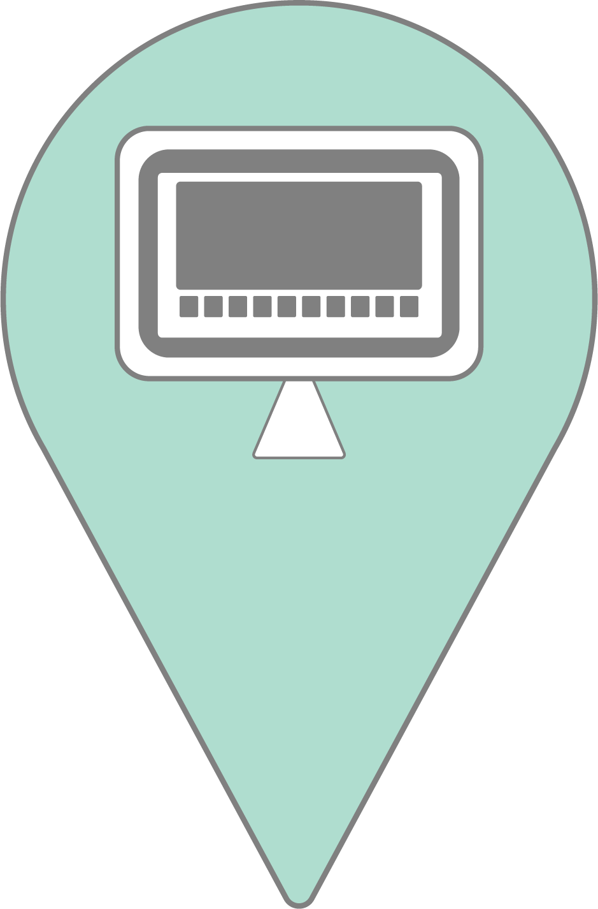

This map aims to show the digital initatives undertaken by museums during the COVID-19
pandemic.
There are lists of various types of projects and Twitter data collections:
on the top-right corner of the map, there is a control to select and filter the categories. You can discover more about this project in the About page.
The dataset is being regularly updated: if you wish to add a museum initiative, you can do so by clicking on the tab 'contribute' or here.
Legend: digital projects
Contemporary Collecting Projects
Social Media Initiatives
Streaming Content
Virtual Tours

Online Exhibitions
Online Exhibitions
Games
Educational Content
Other Activities
Tweets:
#ClosedbutActive